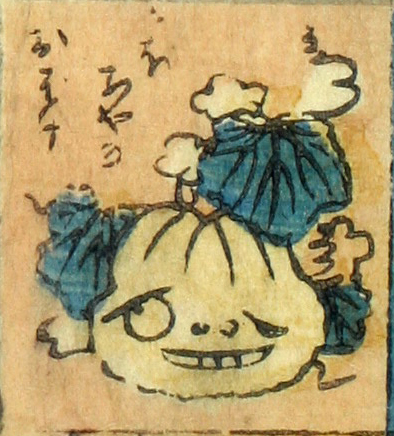

南瓜；カボチャ

かぼちゃのお化け。かぼちゃに目鼻口がついており、口を開けている。胴体はなく、地面に転がっているようである。
著作者：芳盛／出典：親書誌：U426_nichibunken_0073：しん板化物尽し；シンパンバケモノヅクシ／日付：2006／資源識別子：U426_nichibunken_0073_0014_0000
Copyright (c)2010- International Research Center for Japanese Studies, Kyoto, Japan. All rights reserved.